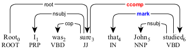
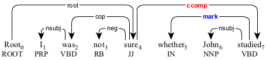
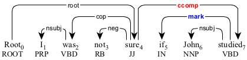

A clausal marker (mark) is the complementizer "that", "whether", or "it" in a clausal complement (ccomp).

The complementizer "that" in the clausal complement "that John studied".

The complementizer "whether" in the clausal complement "whether John studied".

The complementizer "if" in the clausal complement "if John studied".